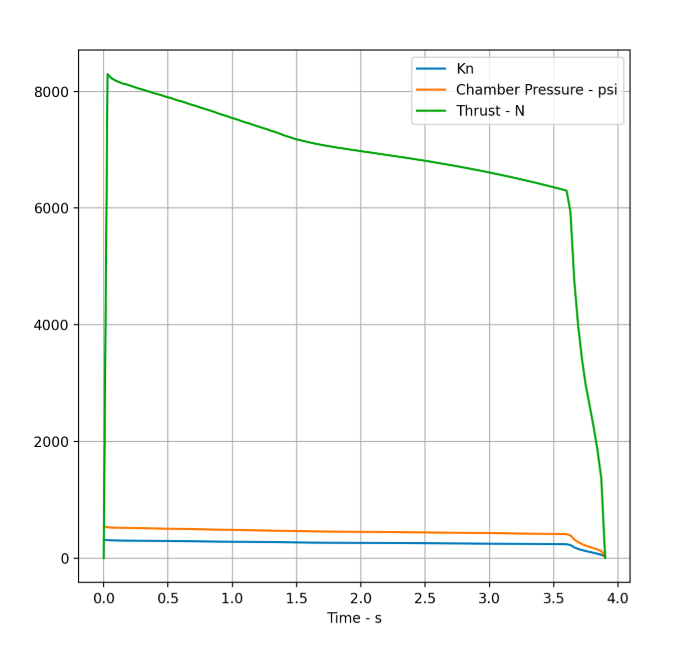

PROPULSION SYSTEM DEVELOPMENT
As part of UC San Diego’s Rocket Propulsion Laboratory, I contributed to the design and development of a high-performance solid rocket motor targeting a 30,000 ft competition altitude. My work spanned internal ballistics analysis, manufacturing tooling, and flight-critical hardware.
I led a grain geometry trade study to shape the motor’s thrust profile, designed a compression-based propellant casting mechanism to improve grain quality, and engineered a head-end ignition bolt capable of sustaining extreme chamber pressures while strengthening the forward closure seal.
Together, these efforts focused on increasing propulsion reliability while delivering predictable thrust under demanding structural and thermal loads.

Simulated thrust curve for the selected grain configuration using OpenMotor software.
GRAIN GEOMETRY TRADE STUDY
Achieving the target altitude required careful control of burn surface evolution throughout the motor operation. I evaluated multiple grain topologies — including BATES, Moon Burner, and Finocyl — comparing burn area progression, structural web limits, and manufacturability.
The Finocyl configuration was ultimately selected for its neutral-to-progressive burn behavior, enabling stable chamber pressure while maximizing delivered impulse.
This trade study established the internal ballistic foundation of the motor and directly informed downstream structural and performance decisions.
Burn area progression for the Finocyl grain, illustrating how multi-fin geometry tailors thrust evolution over the duration of the burn.
PROPELLANT CASTING MECHANISM
To improve grain consistency, I designed and built a mechanical casting assembly that maintains precise axial alignment of the mandrel while applying controlled compression during the pour.
The system integrates a 171 lb/in spring that continuously loads the propellant, forcing trapped air outward and mitigating void formation — a critical factor in preventing unintended burn area growth and pressure excursions.
The structure was manufactured from 6061-T6 aluminum with a safety factor of 4.0, ensuring robustness under thermal exposure near propellant melt temperatures (~120°C).
Compression-based casting assembly engineered to reduce propellant voids and ensure geometric repeatability.
HEAD-END IGNITION BOLT
I designed and manufactured a head-end ignition bolt to serve as the motor’s primary forward pressure seal during second-stage ignition.
The bolt incorporates a precision-drilled internal taper that converts chamber pressure into outward radial force, strengthening the seal as pressure rises — improving closure integrity exactly when structural demand is highest.
The component was analyzed for peak loads exceeding 3,100 psi, ensuring reliable ignition without compromising structural margins.
Head-end ignition bolt designed to transform chamber pressure into a stronger mechanical seal.
LESSONS FROM BUILDING FLIGHT HARDWARE
- Internal ballistic behavior directly shapes structural and manufacturing constraints.
- Repeatable fabrication processes are essential for predictable motor performance.
- Hardware should leverage physics — such as pressure-assisted sealing — rather than resist it.
- Reliable propulsion systems emerge from tight integration between analysis, design, and manufacturing.
- Engineering judgment is often the deciding factor in flight-ready hardware.